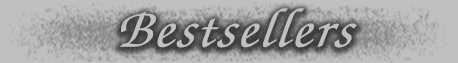

 | ELDERSHAW Stephen Edgar A children’s game in an overgrown garden is the first hint of a troubling presence in the old house ‘Eldershaw’. But is the haunting a memory of the past inscribed in the stonework or a discord the occupants have brought with them? At the heart of Stephen Edgar’s compelling new collection are three interlinked narrative poems ranging forwards and backwards in time from the Second World War to the present day. Drawing on personal experience, reimagined and transformed through the lens of fiction, they enact those charged episodes which shape and scar the lives of several characters. From the dim rooms of ‘Eldershaw’, to the recollected infernos of war, to the uncanny waters of a seaside pool, these narratives affect us with a moving and haunting power. A Co-winner of the Colin Roderick Award (Stephen Romei comments here in The Australian) Eldershaw has been short-listed for the Prime Minister's Literary Award for Poetry. This what the judges said: |
 | THE HANGING OF JEAN LEE Jordie Albison Prize-winning poet Jordie Albiston’s third book is dramatic. It spotlights the crunch times in the life of Jean Lee 1919-1951 from adventurous girl to hanged woman. It captures the times, the completion of the Harbour Bridge, the youth culture of the milk bars, the 'overpaid, oversexed, over here’ American servicemen during the War, the invasion of petty crims for the 1949 Melbourne Cup won by Faxzami. Above all, it understands. Jean's last God-troubled speeches raise her mean life to suburban tragedy. In this richly magical
procession of poems, Albiston re-imagines how the grim life of Jean Lee
stepped along its course to her execution. The book is a triumph of
grasp and sympathy.
Chris Wallace-Crabbe
The God poems are terrific -
they have unafraidness and tension that is sheer coiled energy. The
Hanging of Jean Lee is strong, it’s passionate, it’s truthful and it’s
complex. And it’s tremendously disciplined poetry.
|
 | HIDDEN - A
Graphic Novel Mirranda Burton At first glance, Mirranda Burton's art room is a hidden world full of strange eccentric characters and mysterious minds. But stay a while and in that room you'll find all the joy and sadness of life, the pain and comfort of community, and the ultimate meaning of art. In Hidden Mirranda Burton is writing about what matters most, and she does so with such gentle humanity and wisdom. It is one of the most beautiful books I have ever read. Dylan Horrocks, author of Hicksville In a simple yet effective visual
style reminiscent of Persepolis but wholly its own - and peppered with
some pictures so vivid as to be photographic - local artist Mirranda
Burton draws on her time spent as an art teacher for those with
intellectual disabilities. Her tales are hopeful, dramatic, always
emotionally involving, and never condescending.
Fiona Hardy,
Readings Carlton
|
 | COLOMBINE
New
and Selected Poetry
Jennifer Harrison Colombine unusually contains two sets of ravish new poems, the title sequence and another called Fugue. The poems selected from her previous collections, from the Anne Elder Award-winning Michelangelo's Prisoners to her fourth book, Folly & Grief, illustrate the depth of her talent. Jennifer Harrison
is astonishing. She
comes from a place
that was previously
unknown
|
 | THE PEASTICK
GIRL Susan Hancock The story of Teresa Matheson, her sisters Mollie and Cass, and the untimely and mysterious death of their mother. Teresa has returned to Wellington after five years in Melbourne where she has written a quest novel for younger readers, had two affairs, and met the demon Arkeum. The Peastick Girl is a complex tragi-comedy of manners. A
brave, sensuous and wildly original novel —
I’ve never read
anything quite like it.
Helen
Garner A brief summary can’t really do justice to the complexities of this highly gifted novel... All this is given a lustre and intensity by her precise, musical prose, with its matchless evocations of the weather and the landscapes around Wellington and the fugitive subtleties of her characters’ inner lives. |
 | WIMMERA
Homer Rieth Replacing the battles of heroes and gods with the struggle of mortal humans with time and space, Homer Rieth in Wimmera re-invents the epic. All the classical elements are there but they are now democratic, and ours. The narrator’s anonymous informant knows a thing or two. Objective and personal, learned and demotic, local and vast, Wimmera is the history of a region and seedbed of a vision where ‘the bunyip indeed lays down with the manticore.’ There is nothing like it anywhere. Grand
in conception and impressively detailed in execution, this is a
significant achievement indeed, and a major contribution to Australian
literature. That
Homer Rieth is one of the finest lyric poets writing in Australia was
apparent with the publication in 2001 of "The Dining Car Scene".
It’s an impressive achievement, and a remarkable piece of work. Paul
Kane |